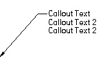
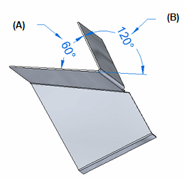
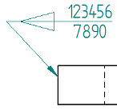

General tab (Callout Properties dialog box)
- Saved settings
-
Specifies the name for a new saved setting. Selecting the arrow lists the previously saved setting names.
Saved settings enable you to save content and formatting properties. You can apply saved settings to quickly format new callouts and to modify existing callouts.
- Save
-
Saves the information in the Callout text, Callout text 2, All around symbol with leader, All over symbol with leader, Taper symbol, and Text alignment boxes to the name displayed in the Saved settings box.
You also can specify that a border appears around each callout using the options on the Border tab. In general, however, you cannot use Saved settings to preserve callout formatting options on the Text and Leader tab, because they are controlled by the Style type named Dimension.
For more information, see Formatting callout text and border.
- Delete
-
Deletes the saved setting information associated with the name currently displayed in the Saved settings box.
Note:Saved settings are saved to text files in the \Program Files\Siemens\Solid Edge 2023\Template\Reports folder, so that you can share these files with other users. The text files are named for the annotation type, for example, DraftCallout.txt.
- Callout text
-
Defines the primary callout text. You can enter information by typing, copying and pasting, and inserting property text and special characters. The position of the cursor determines where property text displays in the callout.
You can use the Enter key to start a new line of text. Use the Format button to apply formatting to the output property text value.
- Callout text 2
-
Defines the secondary callout text. You can enter information by typing, copying and pasting, and inserting property text and special characters. Use the Enter key to start a new line of text.
The secondary text displays below the primary callout text.
Example:If the primary callout text is above the callout line, then the secondary text displays below the line.
 Example:
Example:If the primary callout text is embedded in the callout line, then the secondary callout text will display directly below it. For example:

- Reference
-
 Property Text
Property Text-
Selects property text to be displayed in parts lists, balloons, callouts, and other annotations. To learn how you can use property text, see Using property text.
For a complete list of property text and format codes, see these help topics:
 Reference Text
Reference Text-
Selects text strings from annotations and drawing views for the purpose of inserting the information into other annotations, such as callouts, feature control frames, and balloons.
For more information, see Create reference text.
 Select Symbols and Values
Select Symbols and Values-
Opens the Select Symbols and Values dialog box for you to generate the appropriate symbols and model-derived values without having to type the property text codes yourself. Examples of the types of symbols you can select include ± (plus minus), ° (degree), and ∅ (diameter). Examples of model-derived values include hole references, bend data, and weld beads.
- Format
-
Modifies the format of the property text string output value or text at the current cursor position in the Callout text or Callout text 2 box.
Displays the Format Values dialog box for you to choose the formatting. You can apply formatting to each valid property text string. The type of formatting you can apply depends on your cursor position when you select the Format button. For property text that extracts the file name or document title, you can change the text case to all UPPERCASE letters. For property text that extracts the date created, modified, saved or originated, you can apply month-day-time formatting.
For more information, see the help topic, Format property text values.
- Special Characters
-
Adds special font characters, such as diameter, counterbore, or depth, to the callout text. Pause the cursor over a symbol to see what it represents.
Feature ReferenceAdds a hole, slot, or thread reference, such as thread size or thread depth, to the dimension or callout text. Thread references are associative to the part feature they refer to and will update if the characteristics of the feature are modified.
To reference straight and tapered thread information, refer to the file named PipeThreads.txt in the Solid Edge2023/Preferences folder. Thread size, thread depth, and smart thread depth is used for both straight and tapered threads.
Smart DepthReferences the hole depth data or the slot depth data from the Smart Depth tab of the Modify Dimension Style dialog box.
BendReferences bend information for flattened sheet metal drawing views. For example:
-
 Included Angle—Displays the inside bend angle (A).
Included Angle—Displays the inside bend angle (A). -
Angle—Displays the outside bend angle (B).

Taper SymbolDisplays the taper symbol on the break line when these conditions are met:
-
The Taper Symbol option is set to Left or Right to define the direction you want it to point.
-
On the Callout command bar, the text Position option is set to Above the line
 .
.
Example:
Feature CalloutReferences the feature callout data (for example, for a hole or slot) from the Feature Callout tab in the Callout Properties dialog box or in the Modify Dimension Style dialog box.
All around symbol with leaderDisplays the all around symbol with a leader line on the callout.
You can change the symbol size using the All-around symbol size edit box on the Text and Leader tab.
-
- All over symbol with leader
-
Displays the all over symbol with a leader line on the callout. This option is not available when the All around symbol with leader check box is selected.
You can change the symbol size using the All-around symbol size edit box on the Text and Leader tab.
- Show this dialog when the command begins
-
When set, displays the Callout Properties dialog box automatically when you select the Callout command. When cleared, you have to use the Properties button on the command bar to open this dialog box.
The default is to show the dialog box.
- Preview
-
Shows you the results of your settings before you apply them.
How do I
Place a calloutPlace a hole callout
Place a feature callout
Customize a feature callout
Define smart feature properties in the Dimension style
Learn more
Formatting callout text and borderManipulating callouts
Look up more details
Callout commandCallout command bar
Callout Properties dialog box
Text and Leader tab
Feature Callout tab
Border tab (Callout Properties dialog box)
Quick links
Place a feature callout dimensionBasic reference and property text rules
Format codes to modify reference and property text output